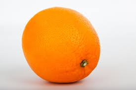

Bem vindo ao site de Laranjas que contém várias informações sobre laranjas
Segundo o google: A laranja é o fruto da laranjeira, árvore da família Rutaceae. Possui porte médio que pode atingir até 8 metros de altura, tronco de cor castanho e copa de formato arredondado. A fruta é de origem asiática, foi levada pelos árabes para a península Ibérica e de lá se propagou pelo mundo.
